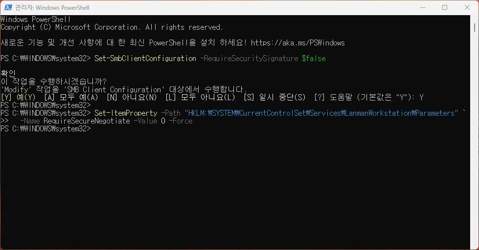

네트워크
네트워크 드라이브 연결 오류 원인과 점검 순서
연결된 네트워크 드라이브에 접근되지 않거나 재부팅 후 매핑이 사라지는 경우
네트워크 드라이브 오류는 자격 증명 만료, 네트워크 검색 설정, SMB 프로토콜 버전 불일치, 로그인 시 재연결 실패 중 하나인 경우가 대부분입니다. 증상이 처음 발생한 시점(Windows 업데이트 이후인지, 비밀번호 변경 이후인지)을 먼저 떠올리면 원인을 빠르게 좁힐 수 있습니다.
Windows 10/11은 기본적으로 SMB1 프로토콜을 비활성화하고 있어, 구형 NAS나 서버에 접근할 때 이 설정 때문에 연결이 안 되는 사례가 늘고 있습니다.
이 가이드가 필요한 상황
- 재부팅 후 네트워크 드라이브 문자(Z: 등)가 사라져 있다.
- 탐색기에서 네트워크 드라이브를 열면 접근 거부 또는 경로 없음 오류가 난다.
- 특정 시점부터 NAS나 공유 폴더에 연결이 안 된다.
- 네트워크 드라이브를 열 때 탐색기가 잠시 멈췄다가 오류를 낸다.
- \\NAS이름(예: \\ITSVC)으로 접속하면 비밀번호 오류가 나지만 \\IP주소로는 정상 접속된다.
- 회사에서 동료 PC의 공유폴더에 접속하면 '네트워크 자격 증명' 입력창이 반복해서 뜨거나 '사용자 이름 또는 암호가 틀립니다'가 나온다(그 PC 자체 로그인은 정상).
- PC 여러 대 중 일부는 NAS·공유폴더에 잘 접속되는데, 특정 PC들만 아예 응답이 없거나 시간 초과로 접속이 안 된다.
먼저 확인할 항목
- 네트워크 검색 및 공유 설정 확인 — ① Windows 로고 키를 누르고 '제어판'을 입력해 Enter ② '네트워크 및 인터넷' 클릭 ③ '네트워크 및 공유 센터' 클릭 ④ 왼쪽의 '고급 공유 설정 변경' 클릭 ⑤ 내 프로필(개인/사설) 아래 '네트워크 검색 켜기'와 '파일 및 프린터 공유 켜기'를 선택 ⑥ 맨 아래 '변경 내용 저장' 클릭.
- 자격 증명 관리자 점검 — ① Windows 로고 키를 누르고 '자격 증명 관리자'를 입력해 Enter ② 'Windows 자격 증명' 탭 클릭 ③ 접속하려는 NAS·PC 이름이 적힌 항목을 찾아 클릭 ④ '제거' 클릭 ⑤ 다시 접속을 시도해 뜨는 창에 정확한 사용자 이름·비밀번호를 입력하고 '자격 증명 저장'에 체크.
- 드라이브 재매핑 옵션 확인 — ① 파일 탐색기에서 '내 PC'를 우클릭 → '네트워크 드라이브 연결' ② 드라이브 문자 선택 ③ 폴더란에 \\NAS이름\공유폴더이름 입력 ④ '로그인 시 다시 연결'과 '다른 자격 증명을 사용하여 연결' 모두 체크 ⑤ '마침' 후 사용자 이름·비밀번호 입력.
- ping으로 서버 응답 확인 — ① Windows 로고 키를 누르고 'cmd'를 입력해 Enter(명령 프롬프트 열림) ② ping 뒤에 한 칸 띄우고 서버 IP나 이름을 입력해 Enter(예: ping 192.168.0.6) ③ 응답이 여러 번 뜨면 정상, '요청 시간 초과'가 뜨면 네트워크 자체 문제이니 랜선·Wi-Fi·공유기부터 확인하세요.
- 이름 접속 시 ping으로 주소 확인(mDNS/IPv6) — IP로는 되는데 이름으로만 실패하면 mDNS(Bonjour)가 이름을 IPv6 링크-로컬 주소로 잘못 해석하고 있을 수 있습니다. 관리자 권한으로 연 명령 프롬프트에서 ping 호스트이름을 실행해, 응답이 fe80:으로 시작하면 이 문제에 해당합니다(192.168로 시작하면 이 원인이 아닙니다). 이 경우 메모장을 관리자 권한으로 실행해 C:\Windows\System32\drivers\etc\hosts 파일을 열고(파일 → 열기 → 파일 형식을 '모든 파일'로 변경) 맨 아래 줄에 192.168.x.x 호스트이름 형식으로 한 줄을 추가한 뒤 저장하고, cmd에서 ipconfig /flushdns와 net use * /delete /y로 캐시를 정리한 뒤 다시 접속하세요.
- LAN Manager 인증 수준 확인(사무실 PC끼리 공유폴더 연결 시 흔함) — NAS가 아니라 다른 PC의 공유폴더에 직접 접속하는 사무실 환경에서는, 두 PC의 'LAN Manager 인증 수준' 정책이 서로 다르면 실제로는 맞는 비밀번호도 협상 단계에서 거부될 수 있습니다. ① Windows 로고 키를 누르고 'secpol.msc'를 입력해 Enter ② '로컬 정책' → '보안 옵션' 클릭 ③ '네트워크 보안: LAN Manager 인증 수준'을 더블클릭해 값을 확인하고, 양쪽 PC를 비슷한 수준으로 맞추세요.
- 여러 PC 중 일부만 안 될 때 IP 대역 비교 — ① 접속 안 되는 PC에서 cmd 실행 ② ipconfig 입력 후 Enter ③ 'IPv4 주소'의 앞 세 자리를 정상 접속되는 다른 PC와 비교 ④ 대역 자체가 다르면(예: 192.168.0.x vs 192.168.1.x) 비밀번호·SMB 설정이 아니라 네트워크 배선(데이터망·전화망 혼선) 문제입니다.
원인을 더 정확히 나누는 방법
오류 코드로 원인 구분
0x80070035(네트워크 경로를 찾을 수 없음)는 네트워크 검색 설정 문제, 0x80070005(액세스 거부됨)는 자격 증명 문제, 0x80004005(지정되지 않은 오류)는 SMB 버전 불일치인 경우가 많습니다.
구형 NAS·서버 연결 시
SMB1 프로토콜만 지원하는 구형 장치라면 Windows 기능 켜기/끄기에서 'SMB 1.0/CIFS 파일 공유 지원'을 활성화해야 합니다. 단, SMB1은 보안 취약점이 있으므로 장기적으로는 장치 펌웨어 업데이트나 교체를 권장합니다.
NAS 없이 PC끼리 공유폴더를 쓰는 사무실 환경
특정 동료 PC 한 대의 공유폴더에만 접속이 안 되고 다른 동료의 공유폴더는 정상이라면, NAS 관련 원인은 해당하지 않습니다. 이 경우 ①그 PC에서 '파일 및 프린터 공유'가 꺼져 있는지, ②그 PC가 최근 Windows 업데이트로 SMB 서명·게스트 정책이 바뀌었는지, ③두 PC의 LAN Manager 인증 수준이 서로 다른지 순서로 좁혀가세요. 워크그룹 환경(도메인에 가입되지 않은 일반 사무실)에서는 공유하는 PC 쪽에 접속할 계정과 동일한 사용자 이름+비밀번호의 로컬 계정을 만들어 두는 것이 가장 안정적입니다.
DSM의 최소·최대 SMB 프로토콜 버전 확인
반대로 DSM에서 최소 프로토콜이 SMB1로 낮게 설정돼 있으면, Windows가 이미 SMB1을 사실상 사용하지 않는 상태와 맞물려 협상 자체가 꼬여 계정·비밀번호 오류로 나타나는 사례가 보고됩니다. DSM → 제어판 → 파일 서비스 → SMB → 고급 설정에서 '최소 SMB 프로토콜'을 SMB2로, '최대 SMB 프로토콜'을 SMB3로 맞추세요(구형 SMB1 전용 기기를 함께 쓰는 경우는 예외입니다). 자격 증명을 다시 입력할 때는 사용자 이름을 NAS이름\사용자명, NAS의IP주소\사용자명, 또는 .\사용자명 형식으로 정확히 입력해야 인증이 통과되는 경우도 있습니다 — Windows가 자동으로 Microsoft 계정이나 PC 이름을 앞에 붙여 보내면서 NAS가 이를 알 수 없는 사용자로 인식해 거부하는 경우가 흔합니다.
'NTLM 인증이 비활성화되어' 오류가 뜰 때(드문 경우)
위의 게스트 로그인·SMB 서명과는 다른 원인입니다. 회사 보안 정책이나 별도로 적용한 보안 강화 그룹 정책이 NTLM 인증 자체를 차단하고 있을 수 있습니다. 다만 이 경우는 사용자마다 시도한 해결책(BlockNTLM 해제, LAN Manager 인증 수준 변경 등)이 통하지 않는 사례도 보고돼 있어, 확실한 해결책이 아직 정립되지 않은 드문 경우입니다. 가정용 PC라면 대부분 해당하지 않으니, 위 항목들을 먼저 확인하세요.
시스템 오류 1208이 뜰 때
SMB1이 아닌데도 구형 NAS·공유 폴더에 연결하면 "시스템 오류 1208이 발생했습니다"가 뜨는 경우가 있습니다. 이는 Windows의 SMB 보안 협상(Secure Negotiate) 요구 수준과 장치가 지원하는 수준이 맞지 않을 때 나타납니다. 관리자 권한 PowerShell에서 아래처럼 클라이언트 쪽 서명 요구를 잠시 낮춰 연결되는지 확인할 수 있습니다.

이 설정은 클라이언트의 보안 요구 수준을 낮추는 것이므로, 신뢰할 수 있는 내부 네트워크 장치에 한해 임시로만 사용하고 연결을 확인한 뒤에는 반드시 원래 값으로 되돌리세요.
NAS를 이름(예: \\ITSVC)으로 열면 비밀번호 오류, IP로는 정상일 때(mDNS/IPv6)
\\192.168.x.x로는 정상 접속되는데 \\NAS이름(예: \\ITSVC)으로 접속하면 사용자 이름 또는 암호가 잘못되었다는 오류가 나고, 자격 증명을 삭제하고 다시 등록해도 같은 오류가 반복되는 경우입니다. 위에서 다룬 SMB 서명·계정 권한 문제와 달리, 원인은 이름 해석 방식 자체에 있습니다. 이름으로 접속을 시도하면 Windows가 Bonjour의 mDNS(.local)로 이름을 풀이하는데, 이때 IPv4가 아니라 fe80:으로 시작하는 IPv6 링크-로컬 주소로 응답하는 경우가 있습니다. 그러면 IP로 접속할 때와 완전히 다른 네트워크 경로(IPv6)를 타면서 SMB 인증이 다르게 동작해 비밀번호 오류로 나타납니다.
PC 여러 대 중 일부만 안 될 때 — 네트워크 배선(데이터망·전화망 혼선)
비밀번호나 SMB 설정을 아무리 손봐도 안 되고, 유독 특정 자리·특정 PC들에서만 증상이 난다면 원인이 아예 다를 수 있습니다. 사무실에서 인터넷전화(VoIP)를 쓰기 위해 데이터망과 전화망을 물리적으로 분리해 각각 별도의 공유기·허브로 구성한 경우, 두 허브가 랜선 한 가닥으로 실수로 연결돼 있으면 논리적으로 두 네트워크가 합쳐집니다. 이 상태에서는 어느 공유기가 DHCP로 IP를 먼저 내려주느냐에 따라 일부 PC가 전화망 대역의 IP를 받게 되고, 그 PC들은 NAS와 아예 다른 네트워크에 있는 것이 되어 접속 자체가 안 됩니다. 증상이 나는 PC가 그때그때 바뀌거나(재부팅마다 DHCP 임대가 달라짐), 특정 자리의 PC에서만 반복된다면 이 케이스를 의심하세요. 원인 케이블을 찾으려면, 정상 PC 한 대를 고정 IP로 설정한 뒤 랜선을 이 PC에 연결해 NAS로 ping을 보내면서 허브의 랜선을 하나씩 뽑아보며 ping이 끊기는 케이블을 찾으면 됩니다.
확인 결과에 따른 다음 단계
- 자격 증명 삭제·재입력 후 해결될 때 — 비밀번호 변경 후 저장된 자격 증명이 갱신되지 않은 것이 원인입니다. 이후 비밀번호 변경 시에는 자격 증명 관리자도 함께 업데이트하세요.
- 재부팅 후 드라이브가 계속 사라질 때 — 로그인 시 네트워크가 아직 준비되지 않아 연결에 실패하는 경우입니다. 작업 스케줄러에서 로그인 후 일정 시간 뒤에 드라이브를 재연결하는 스크립트를 등록하는 방법을 고려하세요.
- SMB1 활성화 후 연결될 때 — 장치가 구형 프로토콜만 지원하는 것입니다. 장치 제조사의 펌웨어 업데이트로 SMB2 이상을 지원하도록 업그레이드하는 것이 장기적으로 안전합니다.
- ping 결과가 fe80:으로 시작하는 IPv6일 때 — hosts 파일에 IPv4 주소를 고정하면 mDNS보다 우선 적용되어 확실하게 IPv4 경로로 붙습니다. ① Windows 로고 키를 누르고 '메모장'을 입력한 뒤, 검색 결과에 뜬 메모장을 우클릭해 '관리자 권한으로 실행' ② '파일' → '열기' 클릭 ③ 파일 형식을 '모든 파일'로 변경 ④ 주소창에 C:\Windows\System32\drivers\etc\hosts 입력 후 Enter ⑤ 맨 아래 줄에 192.168.x.x 호스트이름 형식으로 한 줄 추가(예: 192.168.0.6 ITSVC) ⑥ Ctrl+S로 저장 ⑦ cmd 실행 후 ipconfig /flushdns 입력·Enter ⑧ 이어서 net use * /delete /y 입력·Enter(기존 연결이 모두 끊기니 주의) ⑨ \\호스트이름으로 다시 접속. NAS의 IP가 고정 IP가 아니라면 시놀로지 DSM의 제어판 → 네트워크에서 먼저 고정 IP로 설정해 두는 것이 좋습니다.
- NAS 없이 동료 PC 한 대의 공유폴더에서만 이런 증상이 날 때 — 그 PC에서 '파일 및 프린터 공유'가 켜져 있는지, 최근 그 PC에만 업데이트가 적용됐는지 먼저 확인하세요. 그래도 안 되면 두 PC의 LAN Manager 인증 수준(secpol.msc)이 서로 다른지 비교해보세요 — 사무실에서 PC끼리 직접 공유할 때 가장 자주 확인되는 원인입니다.
- PC 여러 대 중 일부만, 자리나 PC를 바꿔가며 증상이 날 때 — 비밀번호·SMB 설정을 다 확인했는데도 여전히 일부 PC만 안 된다면, ipconfig로 IP 대역부터 비교하세요. 정상 PC와 대역 자체가 다르면 네트워크 배선(데이터망·전화망 혼선) 문제이지 Windows나 NAS 설정 문제가 아닙니다. 이 경우는 사내 네트워크 담당자나 배선을 아는 사람에게 확인을 요청하는 것이 가장 빠릅니다.
자주 묻는 질문
- 재부팅 후 네트워크 드라이브가 사라지는 이유는? '로그온 시 다시 연결' 옵션이 체크되지 않았거나, 로그인 전에 네트워크가 준비되지 않아 연결에 실패하는 경우입니다. 드라이브를 다시 매핑할 때 해당 옵션을 체크하세요.
- 0x80070035 오류가 뜨면? 네트워크 검색이 꺼져 있거나 네트워크 프로파일이 공용으로 설정된 경우입니다. 고급 공유 설정에서 개인 네트워크의 네트워크 검색과 파일 공유를 켜세요.
- \\NAS이름(예: \\ITSVC)으로는 비밀번호 오류가 나는데 IP로는 되는 이유는? 이름으로 접속할 때 mDNS가 IPv6 링크-로컬 주소(fe80:)로 응답해 IP 접속과 다른 인증 경로를 타기 때문인 경우가 많습니다. 관리자 권한 명령 프롬프트에서 ping 호스트이름을 실행해 IPv6 응답이 나오면, hosts 파일에 NAS의 IPv4 주소를 직접 등록하세요.
- NAS 없이 사무실 PC끼리 공유폴더를 쓰는데 특정 PC 한 대만 접속이 안 됩니다. 그 PC에서 '파일 및 프린터 공유'가 켜져 있는지부터 확인하세요. 그래도 안 되면 그 PC와 접속하는 PC의 LAN Manager 인증 수준(secpol.msc → 로컬 정책 → 보안 옵션)이 서로 다른지 비교해보세요.
- PC가 여러 대인 사무실에서 일부 PC만 NAS 접속이 안 됩니다. 비밀번호도 맞는데 계속 안 됩니다. 비밀번호나 SMB 설정 문제가 아니라 네트워크 배선 문제일 수 있습니다. 안 되는 PC에서 ipconfig로 IP 주소 대역을 확인해, 정상 접속되는 PC와 대역 자체가 다른지 비교하세요. 인터넷전화(VoIP) 등을 위해 데이터망과 전화망을 분리해 쓰는 사무실에서, 두 망의 허브가 랜선으로 잘못 연결돼 일부 PC가 엉뚱한 대역의 IP를 받는 경우가 실제로 보고됩니다.
최종 검토일: 2026-09-30